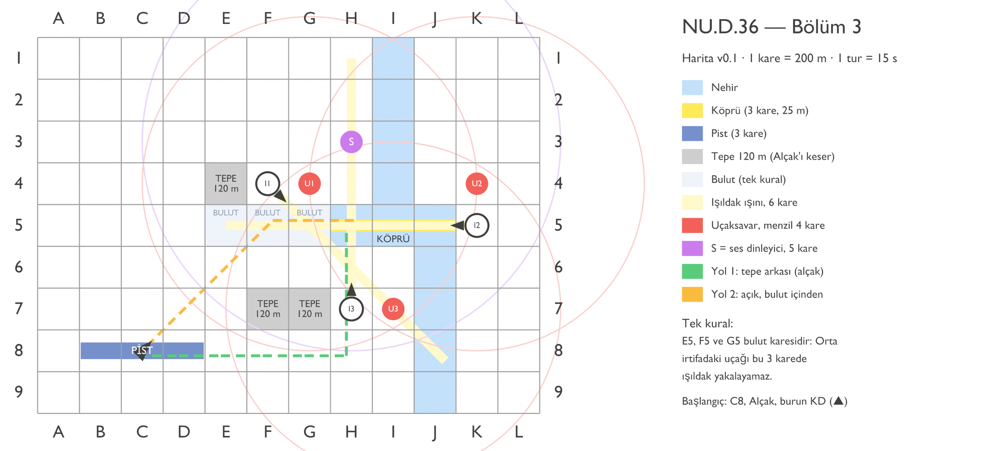

Yazdırmak için Ctrl+P → "PDF olarak kaydet" ya da yazıcı, kâğıt A4, kenar boşluğu "Yok". Üç sayfa: görev sayfası, gözlem formu, yineleme kaydı. Kişi başına bir set.
NU.D.36 · Bölüm 3 · Kâğıt GörevSürüm 0.1 · Ad: ____________________
Görev Sayfası — Gece Köprüsü
Değerler tasarım önerisidir (Lab6_Bolum3_Tasarim.md). Kitin 4. sayfasındaki sabit kurallarla karşılaştır; farklıysa kitinkini yaz.
Görev
| Tek cümle | Gece, köprüyü şafaktan önce yık ve piste dön. |
|---|
| Gece / son tur | 12. tur şafak (12. turun sonunda pistte değilsen görev biter) |
|---|
| Can | 3 |
|---|
| Bomba | 2 |
|---|
| Başlangıç | C8, Alçak irtifa, burun kuzeydoğu (KD) |
|---|
| Tek kural (Bulut) | E5, F5 ve G5 bulut karesidir: Orta irtifadaki uçağı bu 3 karede ışıldak yakalayamaz. |
|---|
Harita (12 × 9 kare, A–L batıdan doğuya, 1–9 kuzeyden güneye, 1 kare = 200 m)
| Pist (3 kare) | B8, C8, D8 |
|---|
| Nehir | I1–I4, H5–J5 (köprünün altında genişler), J6–J9 |
|---|
| Köprü (3 kare, 25 m) | H5, I5, J5 |
|---|
| Işıldaklar (başlangıç yönü) | F4 → GD (135°), K5 → B (270°), H7 → K (0°); ışın 6 kare |
|---|
| Uçaksavarlar | G4, K4, I7; menzil Ø 8 kare |
|---|
| Ses dinleyici (S) | H3; menzil Ø 10 kare |
|---|
| Tepeler (120 m) | E4, F7, G7 — Alçak'ı (30 m) keser, Orta'yı (200 m) kesmez |
|---|
İki yol
| Yol 1 · tepe arkası (Alçak) | C8 → D8 → E8 → F8 → G8 → H8 → H7 → H6 → H5 (8 hamle) |
|---|
| Yol 2 · açık (bulut içinden) | C8 → D7 → E6 → F5 → G5 → H5 (5 hamle) |
|---|

NU.D.36 · Bölüm 3 · Sessiz gözlemciTarih: ____ / ____ / 2026
Gözlem Formu
| Sürüm | 0.1 |
|---|
| Test sorusu (oyundan önce, evet/hayır) | Oyuncu köprüye ilk denemede açık yolu (Yol 2) mu seçiyor? |
|---|
| Oyuncu (eşin) | |
|---|
| Gözlemci (sen) | |
|---|
Kuralları bir kez oku ve sus. Takılırsa yalnızca "Şu an ne düşünüyorsun?" de. Her tur için bir satır yaz; Yorum sütununu boş bırak.
| Tur | Ne yaptı | Ne dedi | Yorum |
|---|
| 1 | | | |
| 2 | | | |
| 3 | | | |
| 4 | | | |
| 5 | | | |
| 6 | | | |
| 7 | | | |
| 8 | | | |
| 9 | | | |
| 10 | | | |
| 11 | | | |
| 12 | | | |
Test sorusunun cevabı
Evet Hayır
Bitince üç soru
| En çok neyi sevdin? | |
|---|
| Nerede takıldın? | |
|---|
| Sihirli değneğin olsa neyi değiştirirdin? | |
|---|
NU.D.36 · Bölüm 3 · Tek değişiklikle yineleAd: ____________________
Yineleme Kaydı
| Eski sürüm → yeni sürüm | 0.1 → 0.2 |
|---|
| Tek değişiklik (bir sayı, bir kural ya da bir jetonun yeri) | |
|---|
| Hangi gözlem satırı yüzünden (tur no + ne oldu) | |
|---|
| Beklenen etki | |
|---|
Aday değişiklikler (yalnız birini, gözleme göre seç): bulutu Yol 2'den çek (E5–G5 → E3–G3) · I2 ışıldağının başlangıç yönünü 270°'den 225°'ye çevir · U1'i G4'ten G3'e taşı. Seçtiğin değişikliği Unity'ye taşımak tek satırdır: Bolum3Harita.cs.
0.2 oyunu
| Kim oynadı (yan ikili daha iyi) | |
|---|
| Test sorusunun cevabı (0.1) | Evet Hayır |
|---|
| Test sorusunun cevabı (0.2) | Evet Hayır |
|---|
| Cevap değişti mi? | Evet Hayır |
|---|
Sonuç ve not
Ekran süresi ile kâğıt süresi (gri kutu, 1 tur = 15 s)
| Yol | Kâğıt: tur × 15 s | Ekran (kronometre) | Fark |
|---|
| Yol 1 | | | |
| Yol 2 | | | |
Unity'nin kendi ölçümü (otopilot, piste dönüş dahil): Yol 1 49,5 s, Yol 2 41,0 s — Logs/lab6/sure_olcumu.txt.